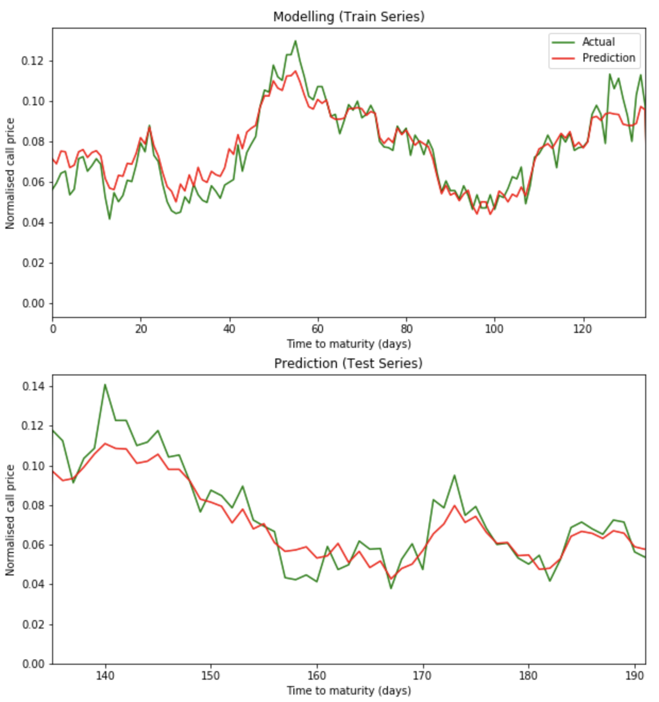
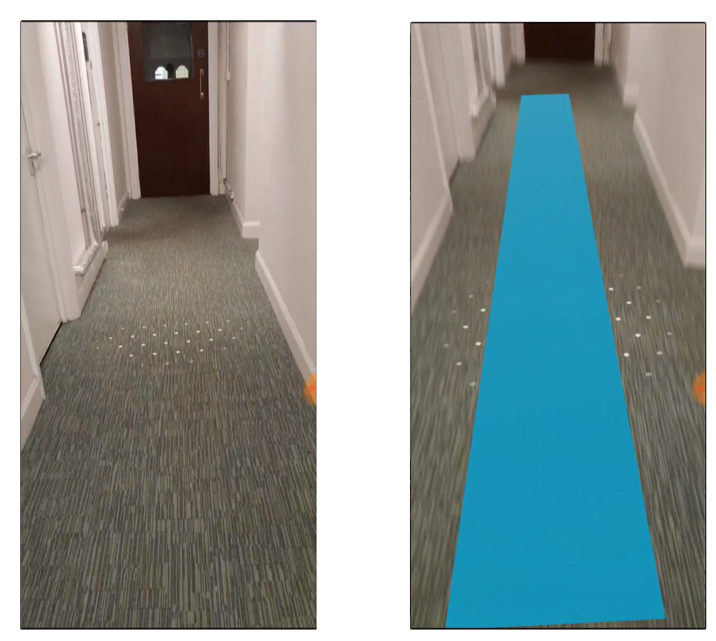
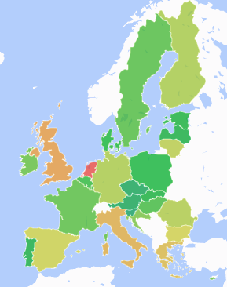

|
Jonathan Tang
Analyst at Citi.
Recently graduated with a master's degree in Computational Finance at University College London (UCL) with distinction, and a bachelor's degree in Computer Science at Goldsmiths, University of London with first class honours.
Proficient programmer in Python, C++, Java, R, Matlab, MySQL, MongoDB, JavaScript, and HTML/CSS.
I previously interned at IntelliBonds, Deutsche Bank, and GetRentr (now Kamma).
email –
CV –
linkedin –
github
|
|
|
Projects
Research interests in computational finance, deep learning, and data science.
|
|

|
Deep Sequential Learning for Option Pricing
Jonathan K.Y. Tang,
Nikolay Nikolaev
Investigation into deep learning models and state-space estimation algorithms for pricing and forecasting European-style call option prices.
|
|

|
Augmented Reality Navigation System for Commercial Spaces
Arif Kharoti,
Nicholas Orford-Williams,
Hardik Ramesh,
Gabriel Sampaio Da Silva Diogo,
Hamza Sheikh,
Jonathan K.Y. Tang
[github]
[report]
Researching augmented reality indoor museum navigation with the A* path-finding algorithm. Developed for Android devices.
|
|

|
Global & European Union Trade Data Visualisation
Jonathan K.Y. Tang,
Tristan Thomson
[website]
[github]
Visualising global trade data from Eurostat on imports and exports of goods and services within the EU28 member states, along with other key international trade countries.
|
|
|
5-a-side Football Competition Timetable Builder
[github]
Optimisation software that constructs the fixtures timetable for the UCS Community Action 5-a-side Football Competition.
|
|